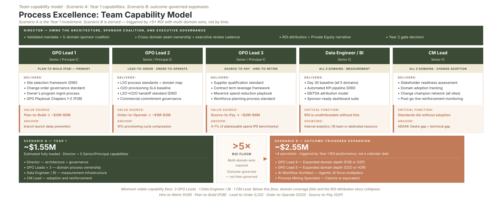

Part 4 of the "How Would You Build It?" series · by Jeffrey Benson
The first question people ask about a new function is "how many people do you need?" It's the wrong first question. Before headcount comes a decision about philosophy, and getting that decision right is what makes the headcount question answerable at all.
Philosophy
Domain experts, or capability specialists?
There are two pure ways to staff a process function, and they pull in opposite directions.
You can hire domain experts: each person a specialist in one or two of the five value chains. The strength is instant credibility with functional leaders; the weakness is that principal-level domain experts are brutally hard to recruit, the domains silo, and your capacity sloshes unevenly as priorities shift quarter to quarter.
Or you can hire capability specialists: each person owns a craft (process architecture, data engineering, change management) and applies it across all five domains. The strength is that scarce skills get used at full leverage everywhere; the weakness is less day-one domain credibility and more dependence on functional partners to bring the domain knowledge into the room.
For Meridian Field Services, my answer is a hybrid, and not as a timid compromise. A couple of process-excellence leads carry domain flavor with Lean Six Sigma as the load-bearing credential, while the data and change specialists are pure capability roles applied across the whole portfolio. Each choice is deliberate, not split-the-difference.
Recruiting
Hire skill-first
When I recruit the process-excellence leads, the primary screen is the craft: a Lean Six Sigma Black Belt or Master Black Belt with demonstrated, quantified results at real scale. Domain experience is a strong tie-breaker between otherwise comparable candidates, weighted a little heavier for the domains with the most distinctive subcultures, but it is not the gate.
The reasoning is simple. Excellent principal-level methodology skill cannot be reproduced quickly; you either have a decade of rigor behind you or you don't. Domain knowledge, by contrast, can be learned, through stakeholder interviews, site visits, and genuine partnership with the people who own the work. If I filter the recruiting pool down to domain experts, I slow hiring dramatically and risk compromising the skill bar that the whole function depends on. So I hire the rare thing and teach the learnable thing.
Leverage
Senior by necessity, small by design
Here's the instinct I'd push back on hardest: the urge to staff a big function with junior analysts.
Five domains across a growing, multi-site company is an enormous surface area. Cover it with junior people and you get volume of activity without leverage: lots of motion, lots of documents, not much that changes the business. A small number of senior specialists, each able to operate as a force multiplier across hundreds of people in the functional organizations, produces far more actual change.
So for Meridian's first year I'd want a lean, senior team: a few process-excellence leads who run the cross-functional work, one specialist who builds the data infrastructure behind every measure, and one who owns adoption and change. Small by design, senior by necessity. The team is intentionally a lever, not a labor pool.

Team Capability Model: Comparing a lean, senior core team (Scenario A) with an specialized, accelerated specialist expansion (Scenario B).
Technology
AI-native, not AI-aware
There's a reason a lean team can credibly cover five domains now in a way it couldn't five years ago, and it's worth being explicit about it.
I expect every specialist on this team to use agentic AI as a personal force multiplier, not as a novelty they're "aware of." Decomposing a process from a stack of interview transcripts, drafting a first-pass standard operating procedure, running variation analysis across messy data: these are now hours of work, not weeks, for someone who's fluent. That fluency is precisely what lets a small senior team operate at a scale that used to require a department. AI-native isn't a perk of this team design. It's load-bearing to it.
Co-Authorship
The non-negotiable: we author with, never for
Whatever the hiring philosophy, one principle holds in every version of the model, and it's the one that actually determines whether the function survives.
The work is led by us, but authored with the functional partners. Mapping the current state, designing the future state, eliminating waste, building the standards: none of that is ours to author alone. The team's job is to lead cross-functional groups made up of the operational leaders who actually own the work, and every published standard names its functional co-authors. The leader is credited as the architect of their domain's standard; we're credited as the facilitators and structural authors who made it rigorous and repeatable. Skip that, and the function fails fast, no matter how skilled the team, because people don't adopt what they feel was imposed on them.
This is also where my own background shows up most directly. Years ago, I built a workforce-capacity model that forecast skilled-technician demand against the available supply of qualified labor, across geography and skill set. We didn't build it for the operations leaders; we built it with them, and it surfaced a picture of capacity that the org had never been able to see clearly before. At a company like Meridian, where the skilled-technician pipeline is a genuine constraint on growth, that same approach is exactly what the Hire-to-Retire domain needs: a clear, shared view of supply against demand that the operations leaders help author and therefore actually trust.
A question for anyone scaling a team right now: are you staffing for volume or for leverage? They look similar on an org chart and produce completely different results. I've watched senior, lean teams outperform departments three times their size, entirely because of how the work was leveraged rather than how many hands touched it. I'd be curious which way your last hire was really aimed.
Next in the series: Part 5, on the playbook itself, and the three principles that decide whether a process function gets pulled in or quietly routed around within six months.
Sources: Independent research on Process Excellence and Global Process Ownership (GPO) framework deployments. Practical applications of standard work, organizational design, and continuous improvement metrics in high-growth rollups.